Enabling researchers to study how cartilage, ligaments, and bones interact throughout joint motion, rather than at a single static position.
Project Brief
Goal
Design a compact continuous passive motion (CPM) device that repeatedly actuates an ex-vivo rat knee inside a micro-CT scanner, enabling dynamic imaging of the joint throughout controlled flexion and extension.
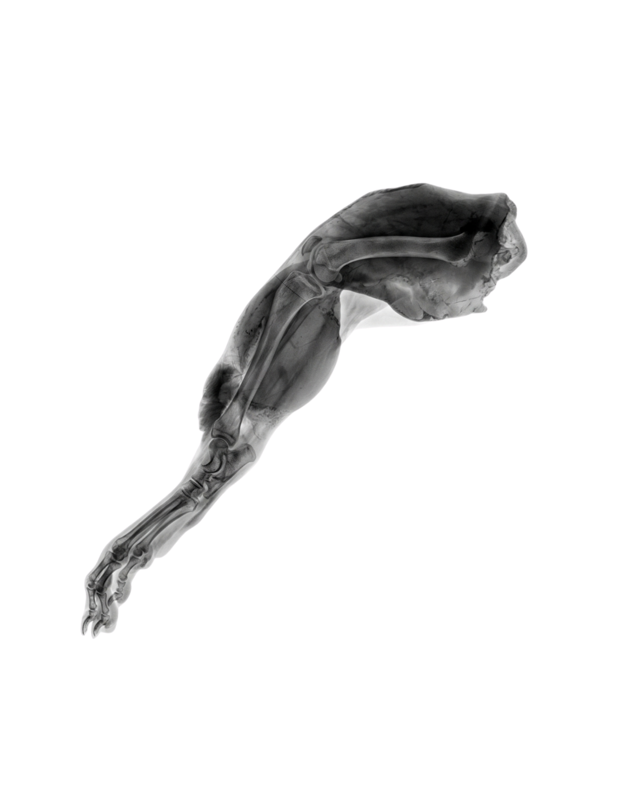
Problem
Conventional micro-CT captures only static snapshots of biological tissue. Understanding how cartilage, ligaments, and bones interact during movement requires a system capable of producing repeatable knee motion while fitting within the scanner’s tightly constrained imaging bore.
Constraints
The mechanism had to fit within a 10 cm micro-CT bore while remaining CT-compatible, producing smooth and repeatable knee motion without introducing imaging artifacts. It also needed to securely accommodate rat specimens of varying sizes and operate reliably for extended scan durations.
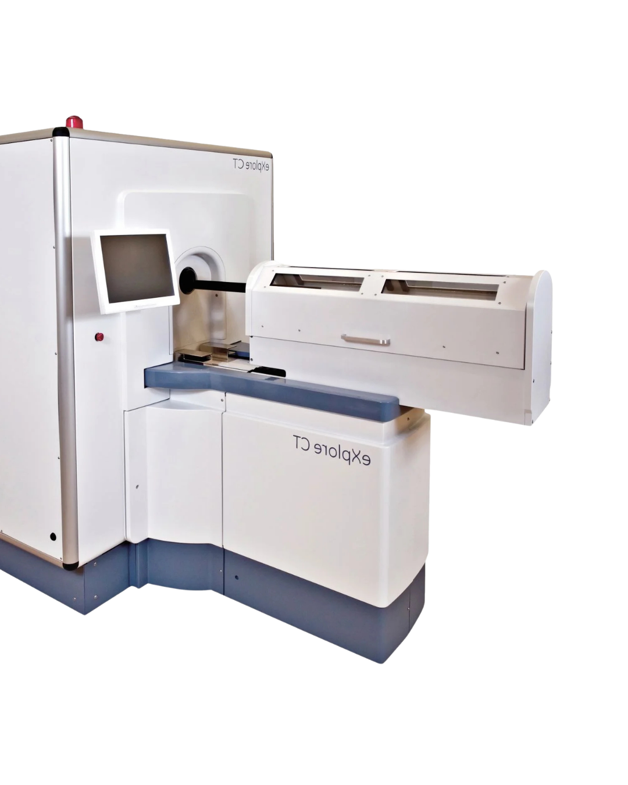
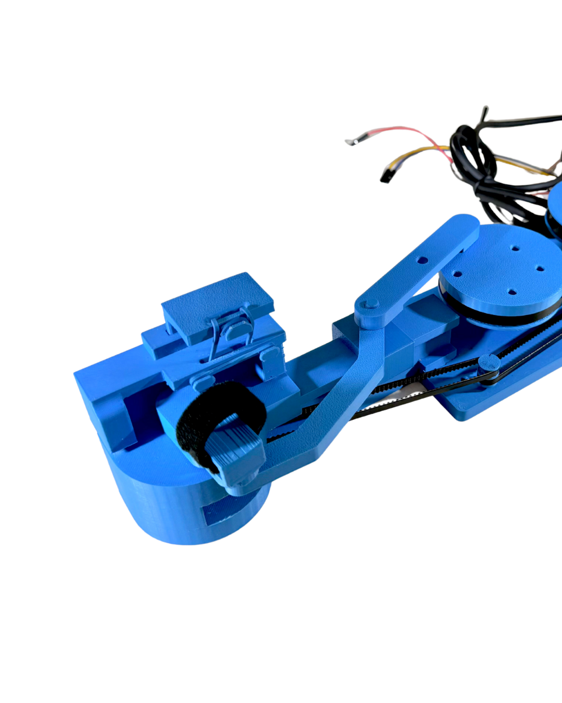
Deliverables
A fully functional continuous passive motion (CPM) device, accompanied by a graphical user interface (GUI), user guide, spare components, final design report, and complete project documentation through the course website.
Product Reveal
Final Design
Scroll to explore
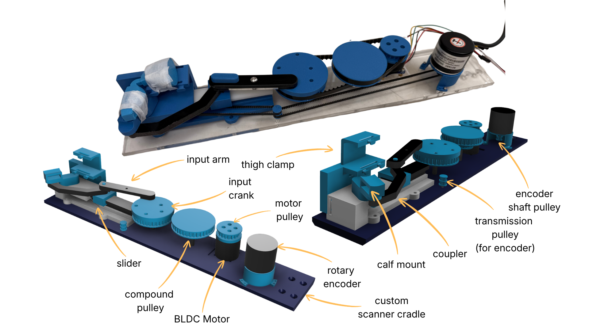
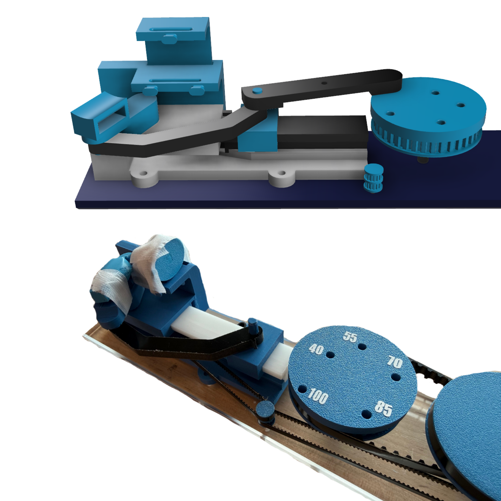
Adjustable ROM
Instead of aiming for a continuous range of adjustment. We opted for 5 discrete ranges of motion.
By changing which hole the pin of the input arm is inserted into the output pulley, the user can choose a range of motion of 40°, 55°, 70°, 85°, or 100°. This allows for a simple and easy to use way to adjust the range of motion.
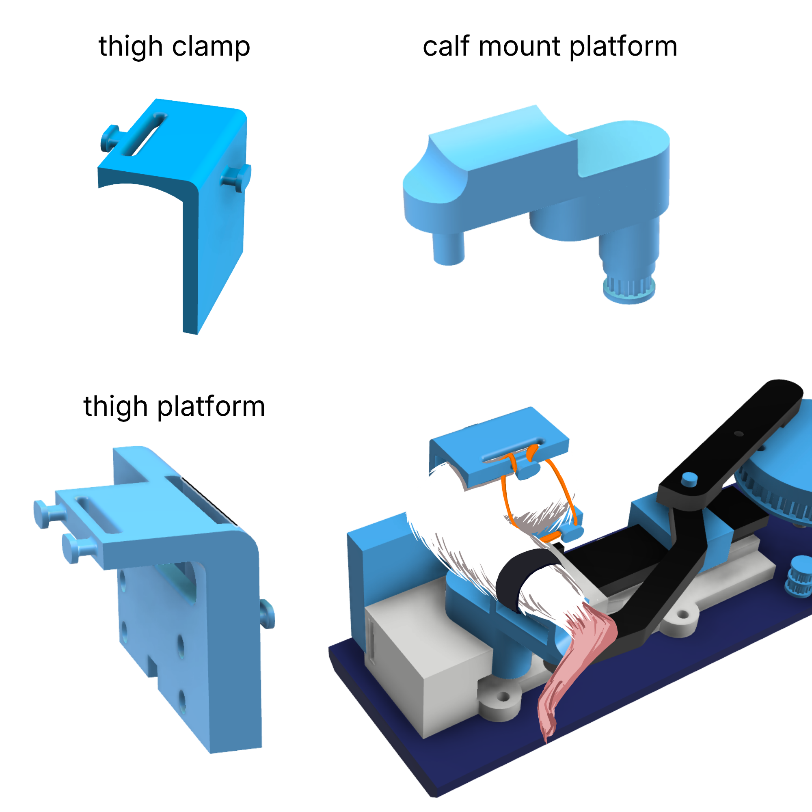
Mounting
Because rat leg geometry varies between specimens, the mounting system was designed to be both secure and adaptable. A rubber band-assisted sliding clamp stabilized the thigh, while a padded Velcro strap secured the calf to the output crank. The design also supports medical tape as an alternative mounting method to accommodate future experimental preferences.
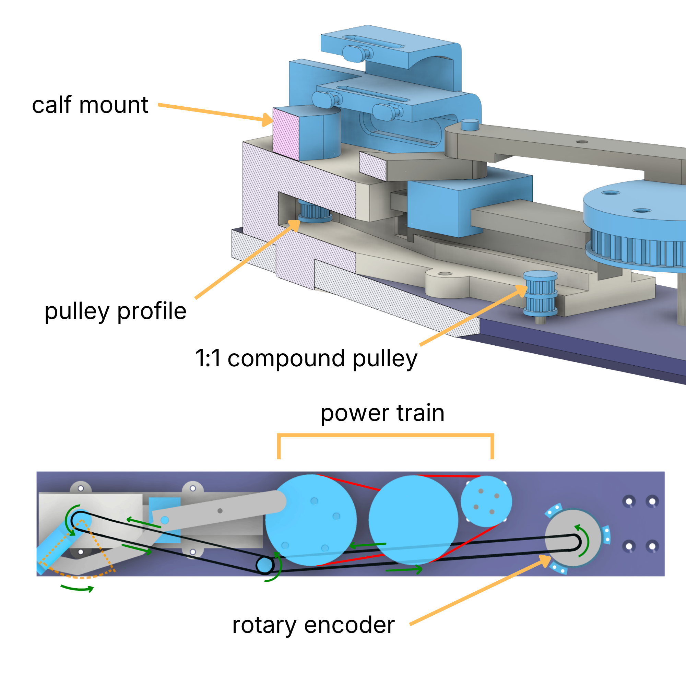
Powertrain & Encoding
A 4:1 compound belt-driven transmission reduces the motor speed while increasing output torque, providing smooth and controlled actuation of the crank-slider mechanism. A brushless DC motor drives the input pulley, converting continuous rotation into the linear reciprocating motion required to flex and extend the rat knee.
To accurately measure the knee position, a secondary 1:1 belt transmission carries the crank arm’s rotation to an optical encoder located outside the micro-CT scanner. Measuring the output directly avoids errors introduced by drivetrain compliance and keeps electronic components away from the imaging area, ensuring reliable position feedback without interfering with CT scanning.
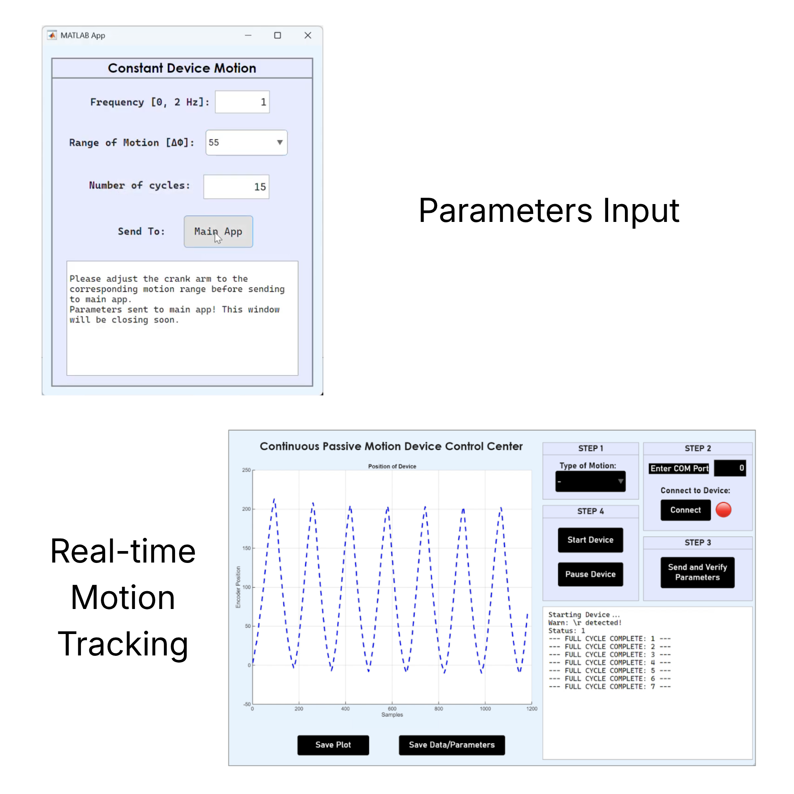
MATLAB Interface
The graphical user interface (GUI) allows researchers to configure key experimental parameters, including motion mode, frequency, range of motion (ROM), and the number of actuation cycles. Once configured, these parameters are transmitted directly to the device for repeatable experiment setup.
During operation, the GUI visualizes encoder feedback in real time while tracking the current cycle count and device status. Motion automatically stops once the prescribed number of cycles is completed, and the recorded position data can be exported for further analysis.
A walk through
Design Process
Module 01 — Ideation
Ideation
Project Overview
This project explores a new approach to medical imaging by developing a CT-compatible continuous passive motion (CPM) device capable of repeatedly flexing and extending a rat knee inside a micro-CT scanner.
The device serves as a proof of concept for future studies investigating how knee joints behave under diseased and post-surgical conditions. By producing highly repeatable motion during scanning, individual CT images captured at different flexion angles can later be reconstructed into a dynamic 3D visualization of the joint.
The idea was inspired by an earlier dynamic CT study from the NYU Langone Medical Center 3D Imaging Lab. Rather than treating CT as a tool for capturing static anatomy, the researchers reconstructed a moving 3D model of a beating heart by imaging it throughout its motion.
Dynamic CT imaging study of the heart, conducted by NYU Langone Medical Center 3D Imaging Lab and uploaded by ICPMEducation (0:11-0:17).
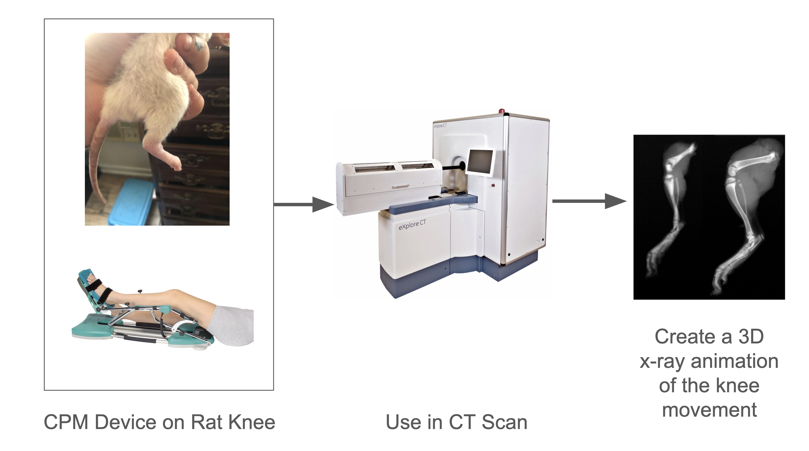
System Goal
The device repeatedly actuates the rat knee through controlled flexion-extension while CT scans capture volumetric image data across multiple motion states.
The resulting scan sequence can then be reconstructed into a dynamic visualization of joint behavior under motion.
Defining the Problem
Before exploring mechanisms, the motion requirements and environmental constraints first needed to be established.
The system not only needed to generate controlled knee motion, but also operate within the physical and imaging limitations of a CT scanner.
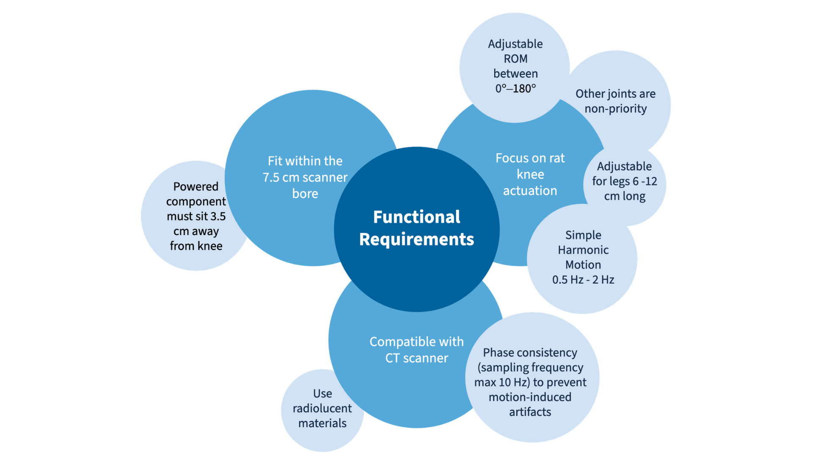
Primary Requirements
CT-compatibleCompact within 10 cm scanner boreRepeatable motionAdjustable range of motionSmooth oscillatory behavior
At this stage, the project still assumed that reproducing natural gait-like motion would be important for the imaging process. However, one major limitation quickly became apparent:
We did not yet have access to real rat leg specimens.
Without direct physical measurements or experimental observation, the early design process relied heavily on biomechanics literature and computational modeling to estimate realistic knee behavior and motion envelopes.
This led to the next phase of the ideation process: reconstructing rat gait motion from published research.
Biomechanics & Gait Studies
Understanding the motion before designing the machine.
Anatomically Constrained Skeletal Model
To understand how a rat hindlimb naturally moves, I referenced the Anatomically Constrained Skeletal Model (ACM) developed by Monsees et al., a biomechanics framework that reconstructs the three-dimensional skeleton of freely moving rodents from video while enforcing anatomically realistic bone lengths and joint motion constraints.
At this stage of the project, physical specimens were not yet available, making it difficult to reason about realistic limb motion. To bridge this gap, I used the authors’ pose estimation pipeline to extract skeletal pose data from their published gait videos, then imported the reconstructed joint trajectories into MATLAB to generate an animated three-dimensional skeleton.
Visualizing the reconstructed gait made it much easier to understand how the hip, knee, and ankle coordinate throughout a walking cycle. Rather than interpreting joint angle plots alone, I could observe the overall limb motion, spatial envelope, and changing pose from any viewpoint.
This reconstruction served as an exploratory tool that provided an intuitive understanding of natural rat gait before moving on to more focused knee modeling.
Motion tracking of a rat using ACM skeletal model implemented in MATLAB.
What the ACM Helped Answer
How does a healthy rat knee move during walking?
What range of motion should we initially target?
Limb proportions
Limitations
No physical specimen validation
More detailed than necessary once project requirements shifted toward repeatability over gait replication
Complex full-leg behavior may exceed project needs
Boettger Knee Model
To study the knee joint in isolation, I developed a simplified kinematic model using experimental gait data from Boettger et al.
The study measured knee joint angles throughout the gait cycle of freely walking rats using high-speed X-ray videography, providing a reliable reference for natural knee motion.
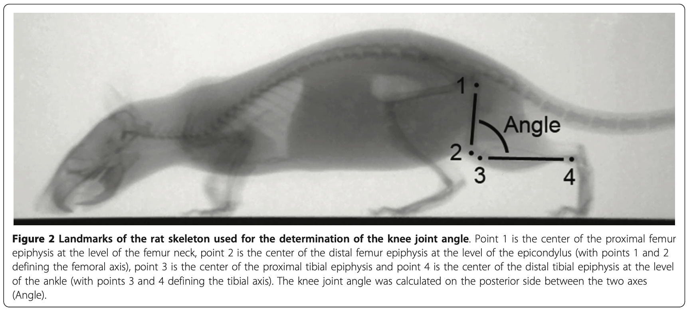
Skeletal landmarks used to determine knee joint angle from Boettger et al.
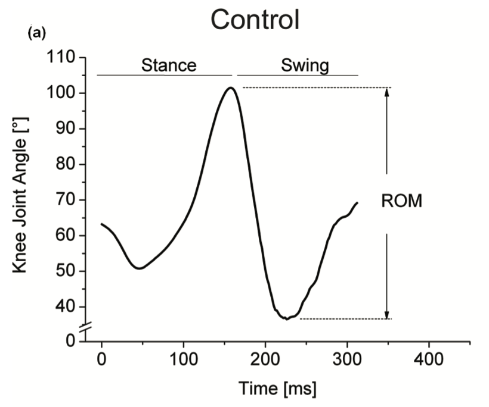
Knee joint angle across stance and swing phases, showing ROM from Boettger et al.
Using this dataset, I recreated the knee's flexion-extension motion to better understand its range of motion and spatial envelope independent of the rest of the limb.
Unlike the ACM model, which reconstructs the entire skeletal system, this approach reduces the motion to a single degree-of-freedom knee hinge driven directly by experimentally measured joint angles.
This model made it easier to analyze knee range of motion, angular velocity, acceleration, and the overall flexion-extension profile, informing the motion requirements for the final device.
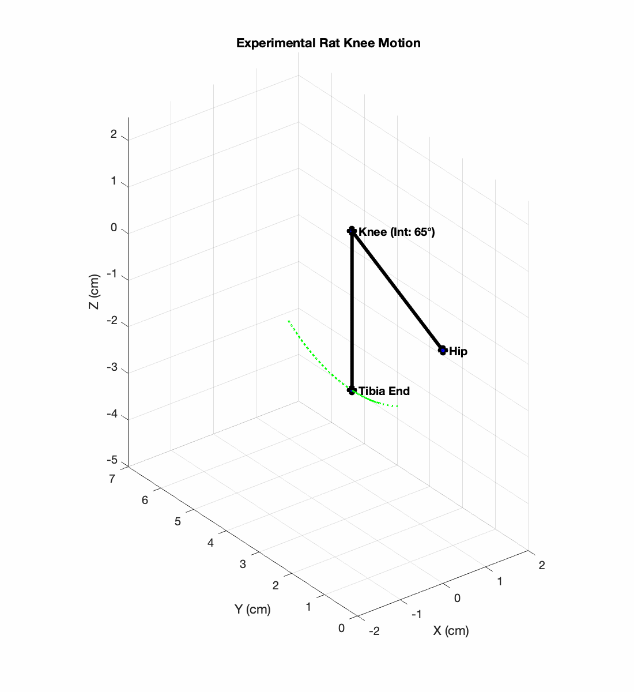
Reconstructed 1-DOF rat knee cycle from Boettger et al. experimental angle data.
Consolidated Gait Model
After studying both the ACM full-body model and the experimental knee data from Boettger et al., I developed a consolidated gait simulation that combined insights from both approaches into a single forward kinematic model.
Bone lengths were estimated using published allometric relationships for a 300 g rat, while joint limits were taken from the ACM framework. Rather than allowing joints to abruptly reach their limits, a soft-stop function based on a sigmoid mapping was implemented to produce smooth transitions and avoid unrealistic motion.
The hip joint was driven by a damped sinusoidal trajectory to represent the primary gait input. Forward kinematics then propagated this motion through the knee and ankle, generating the complete hindlimb pose over a walking cycle.
The resulting simulation allowed me to visualize an isolated rat hindlimb moving through a natural gait cycle without access to a physical specimen. It also provided an early estimate of the limb’s working envelope, helping determine whether the motion could be accommodated within the limited bore of the micro-CT scanner.
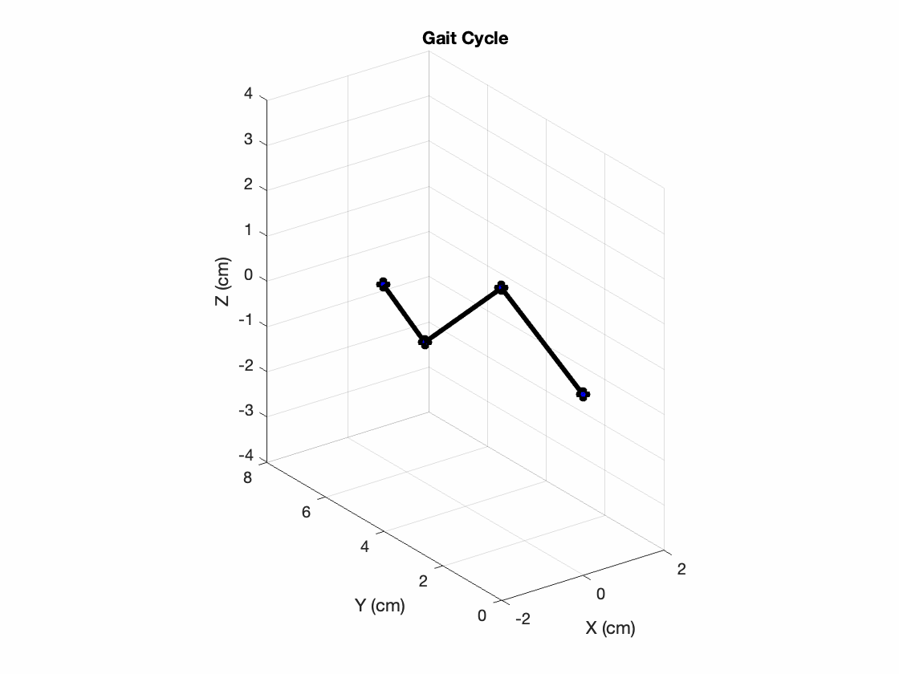
Rat hindlimb gait simulation implemented on MATLAB.
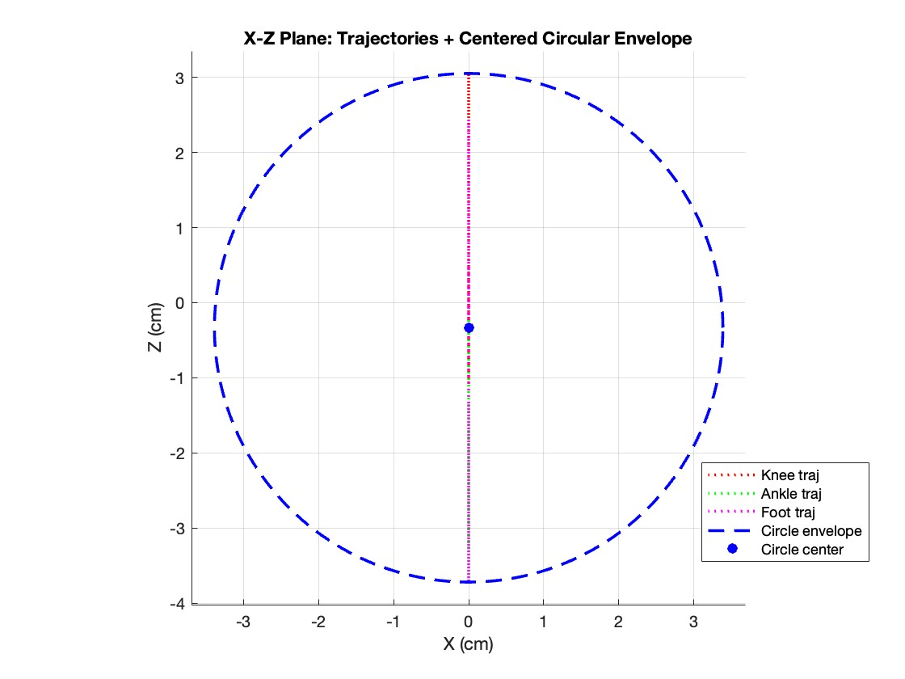
Working envelope in the XZ plane.
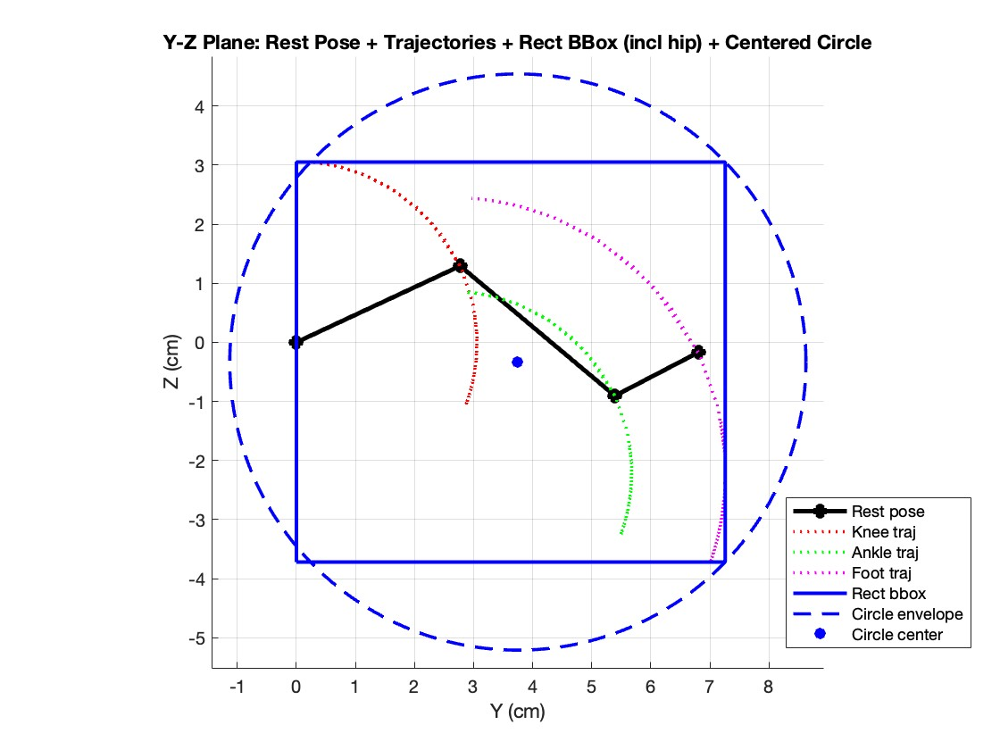
Working envelope in the YZ plane.
These findings directly informed the next stage: exploring mechanical architectures capable of reproducing similar motion behavior.
Early Mechanism Exploration
Translating motion into mechanisms.
With a rough understanding of the gait behavior established, several mechanism concepts were explored to investigate how the motion could be mechanically generated.
At this stage, the goal was still relatively ambitious:
Reproduce natural gait-like motion using mechanical linkages.
Since the initial goal was to recreate natural gait, these mechanisms were driven at the hip, allowing the knee and ankle to follow naturally through the linkage. The double-rocker mechanism further attempted to constrain the knee motion so that it remained dependent on the hip’s movement.
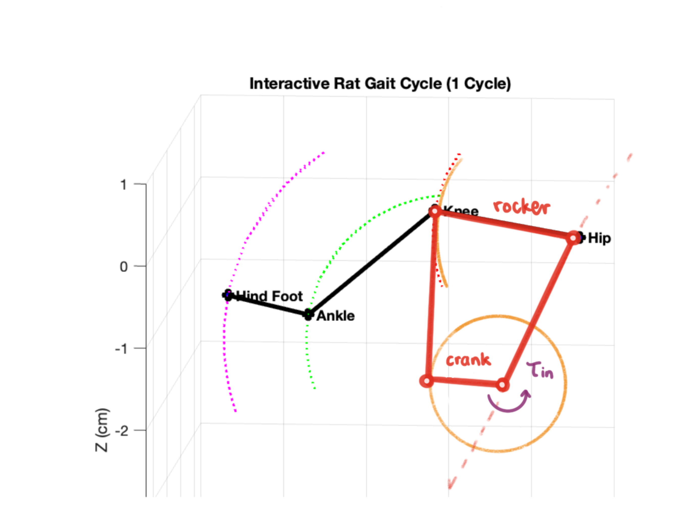
Crank–rocker
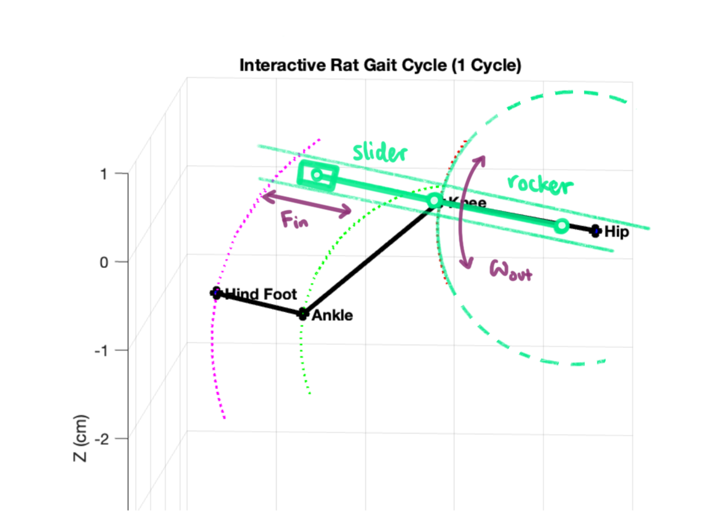
Slider-rocker
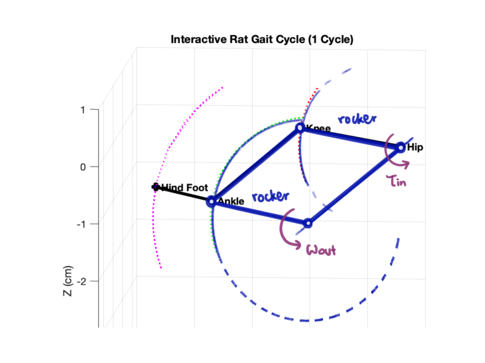
Double-rocker
Mechanism
Strength
Main Limitation
Crank-rocker
Smooth oscillatory motion
Additional knee actuation layer needed
Slider-rocker
Adjustable trajectory through geometry
Lacks independent knee actuation
Double-rocker
In-phase joint motion
Motion constrained by linkage geometry
From this concept exploration, none of these mechanisms are ideal for providing independent and focused knee actuation, since they were primarily conceived to reproduce natural gait motion rather than isolate the knee joint.
Project Pivot
Simplifying the problem.
After consolidating the simulations, mechanism studies, and initial findings, the concepts were reviewed with the project sponsor, Dr. Jerban.
That discussion ultimately changed the direction of the project.
The project did not actually require full gait reproduction. The primary requirement was significantly simpler: generate controlled and repeatable knee flexion-extension motion during imaging.
This clarification dramatically narrowed the design space.
The project could now focus entirely on isolated knee actuation, repeatability, compact packaging, and scanner compatibility rather than actuating the entire leg or reproducing biologically accurate gait motion.
This pivot became the transition point into the next phase: evaluating and shortlisting mechanisms specifically optimized for controlled knee flexion-extension.
Module 02
Mechanism Exploration
Now that we knew we only needed to actuate the knee, how did we decide on the best mechanism?
Comparing Candidate Mechanisms
With the project scope refined to isolated knee actuation, the design process shifted away from reproducing full gait and toward identifying the simplest mechanism capable of delivering reliable, repeatable knee motion.
The initial concepts were evaluated against the project’s functional requirements, considering factors such as motion quality, adjustability, mechanical complexity, packaging constraints, and micro-CT compatibility. The ideal candidate should balance these factors while meeting the project’s specific needs without unnecessary complexity.
Three mechanisms were shortlisted which were deemed most promising.
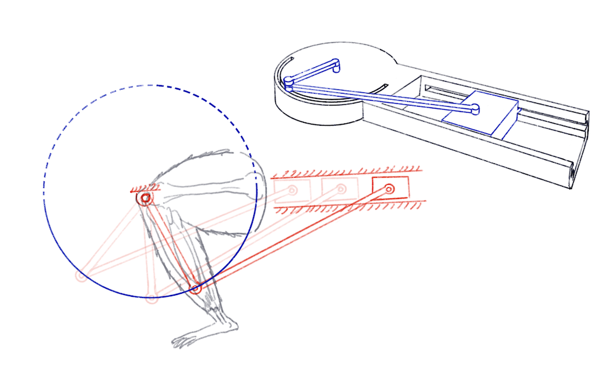
Slider-rocker mechanism
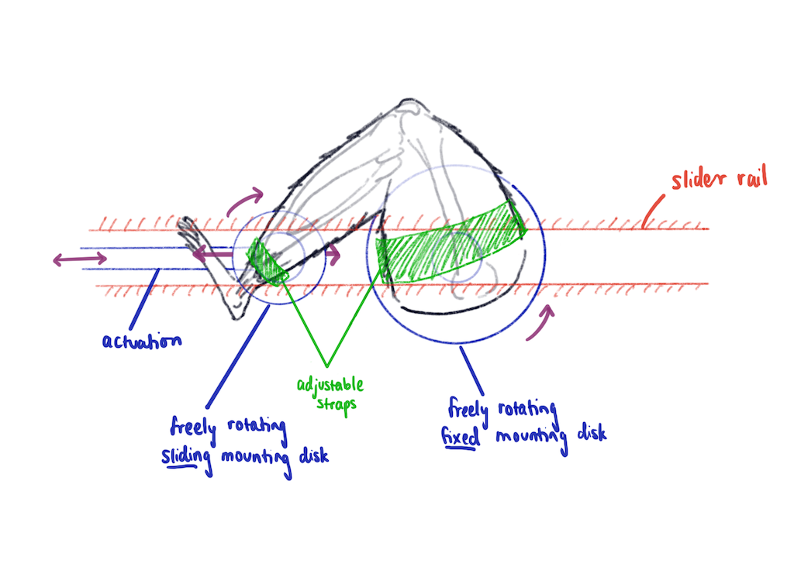
Rail mechanism
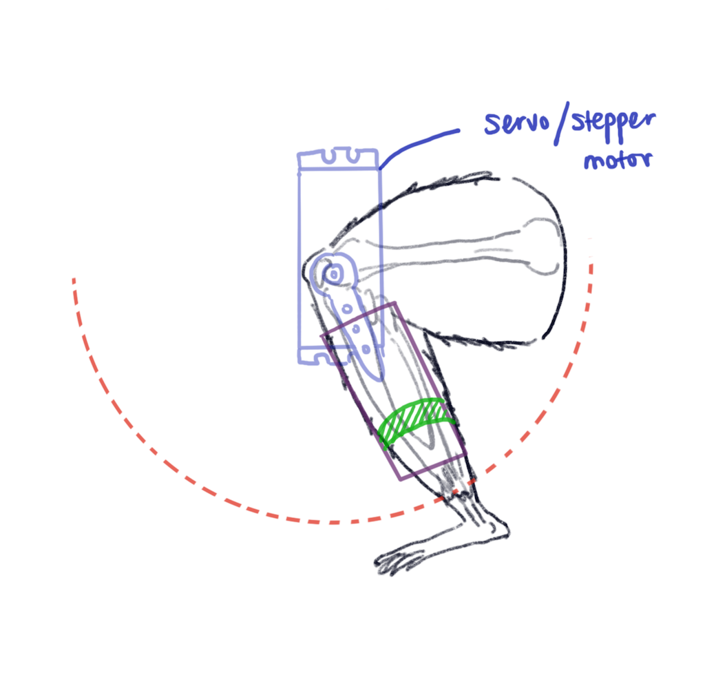
Direct drive mechanism
Designs
Slider-rocker mechanism
Rail mechanism
Direct drive mechanism
Design Impact
Actuated part
Slider (away from specimen)
Ankle mounting disk
Tibia mounting plate
Stationary part
Femur mounting plate
Hip mounting disk
Femur mounting plate
Custom ROM implementation
Hardstop clamps along the crank-coupler joint slot
Indirect ROM control through ankle translation; varies with leg geometry
Specification through control system
Robustness to leg length variation
Moderate – femur and tibia mounting plates can be made adjustable
Poor – knee motion depends on limb length
High – joint angle controlled directly
Biggest Risk
Slider jamming or friction
Knee motion highly sensitive to leg geometry
Imprecision due to motor backlash
Pros
Mechanically simple and compact; hardstops allow precise control of joint angle limits; easy to tune motion range through geometry
Simple mechanism with fewer moving parts; allows natural bending of the knee from ankle positioning
Direct and simple knee actuation; supports user-defined ROM and motion profiles; fewer linkage parts and simpler kinematics; compact and straightforward to control
Cons
Motion profile fixed by linkage geometry; less flexible for adjusting motion trajectory
Potential friction in linear sliding components; mounting discs size restrict small flexion angle; joint angle response depends on limb length, reducing motion repeatability across different leg sizes
Motor torque must directly overcome joint resistance; limited by motor backlash or missed steps; motor mass near the joint may increase bulk; not inherently CT/MRI compatible near the imaging region
Logistical Impact
Cost
Free – 3D printable components from UCSD resources
Free – 3D printable components from UCSD resources
$7.98 for 4 motors from Amazon
Lead Time
Less than 1 day to 3D print parts
Less than 1 day to 3D print parts
Maximum 5 days of Amazon Prime Shipping
Risk Reduction
A risk reduction effort was conducted to evaluate areas of high risk so that mitigation strategies could be developed.
Before committing to a final design, the largest technical uncertainties needed to be addressed. The shortlisted slider-rocker and rail mechanisms were rapidly prototyped to evaluate their mechanical behavior and identify practical issues that could not be predicted through CAD alone.
Material compatibility was another critical risk. Because the final device would rely heavily on 3D-printed components, sample ABS parts were scanned inside the micro-CT to verify that they would not introduce imaging artifacts.
Testing accessibility also presented a challenge. With limited access to both biological specimens and the micro-CT facility, a mock testing environment was developed using a flexible TPU rat leg and a replica scanner bore. This allowed the mechanism, packaging, and mounting strategy to be refined before formal validation.
Quick prototype testing of the slider-rocker and rail mechanisms.
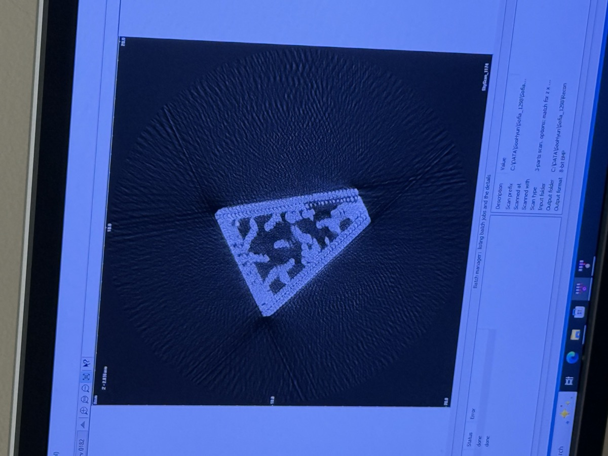
Micro-CT scan of a 3D-printed ABS sample checked for imaging artifacts.
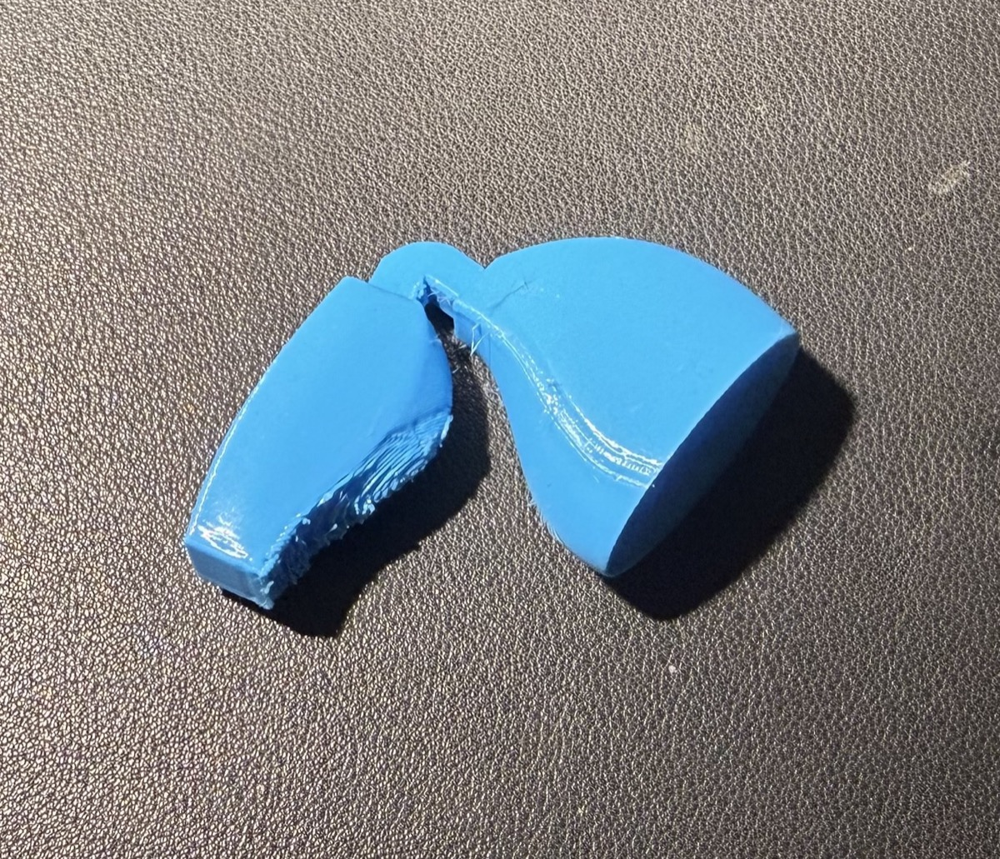
Flexible TPU mock leg used to test mounting and packaging without a specimen.
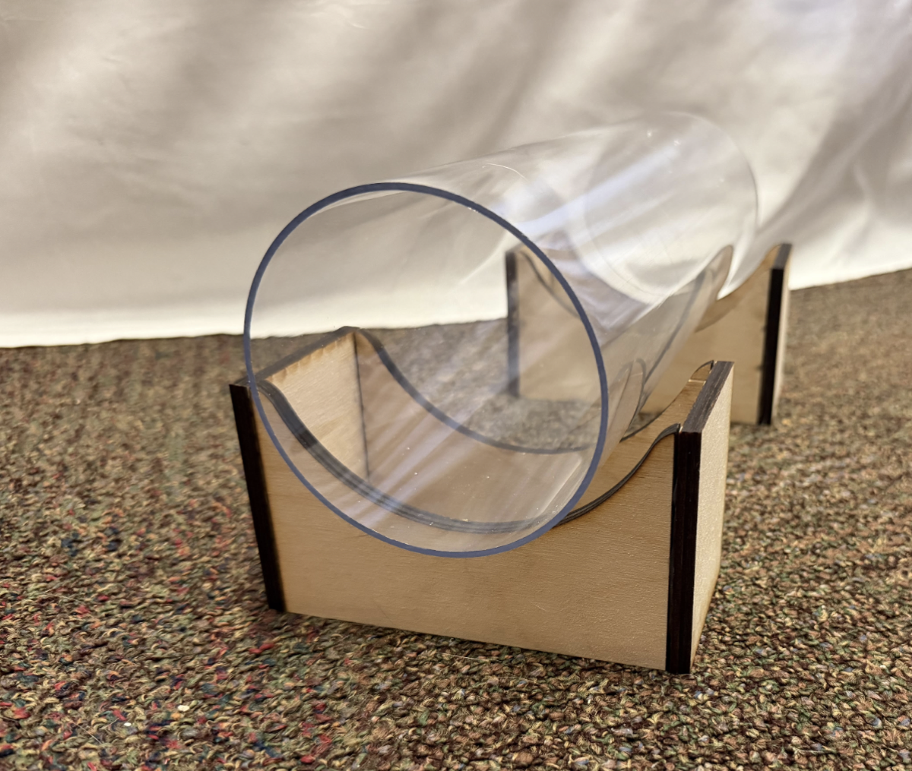
Replica scanner bore used to validate packaging within the imaging constraint.
Crank-Slider / Slider–Rocker Mechanism
The winner mechanism
After evaluating multiple concepts,
The crank-slider mechanism emerged as the best balance of simplicity, controllability, and repeatability.
Rather than directly actuating the knee with a motor, the mechanism converts continuous rotary motion into a controlled back-and-forth linear stroke, which then drives the knee through flexion and extension.
Compared to the other shortlisted concepts, the crank-slider was less sensitive to variations in specimen geometry, resulting in more consistent motion across different rat legs. It also eliminated the need to place motors or other electrical components near the imaging region, making it better suited for the micro-CT environment.
Module 03
Preliminary Analysis
Diving deeper into the Crank-Slider mechanism.
Input vs Output Motion Profile
The crank-slider mechanism introduces a fundamental kinematic trade-off between the input and output motion. By analyzing the mechanism’s geometry, I found that only one side of the system can exhibit simple harmonic motion (SHM). If the input slider follows SHM, the knee motion becomes non-SHM. Conversely, achieving an SHM knee motion requires a non-SHM input profile.
The sponsor’s preferred outcome was a smooth oscillating knee motion with an adjustable range of motion (ROM). Achieving this, however, would require a more complex input motion profile rather than a simple constant-speed drive.
The alternative was to prioritize a simpler actuation system. Driving the input with SHM results in a mechanically straightforward solution, while accepting a non-SHM knee trajectory. This trade-off became a key consideration in the final mechanism design.
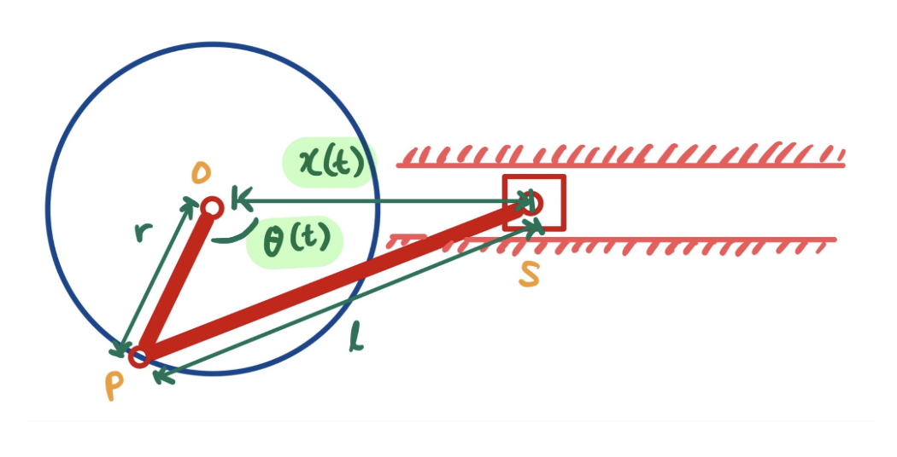
SHM Knee
$\theta(t) = \theta_{\text{mean}} + \Theta\sin(2\pi f t)$
User-defined knee motion
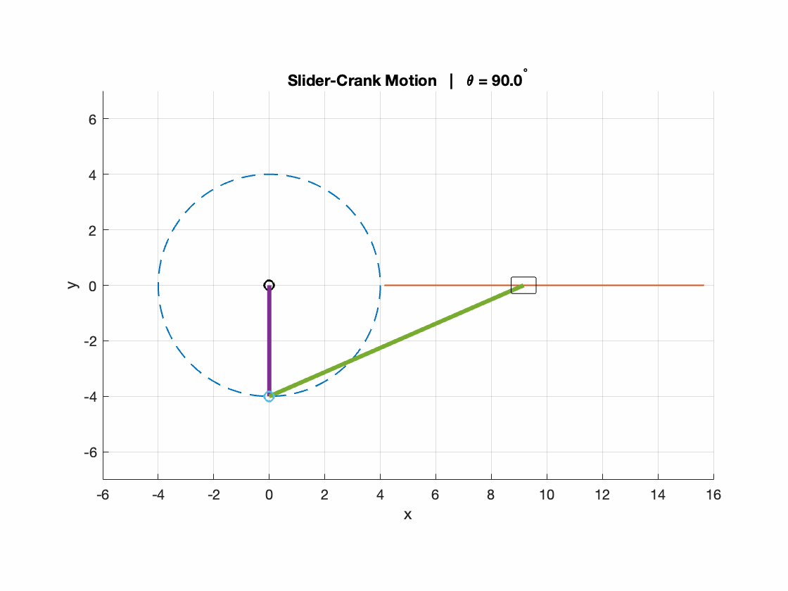
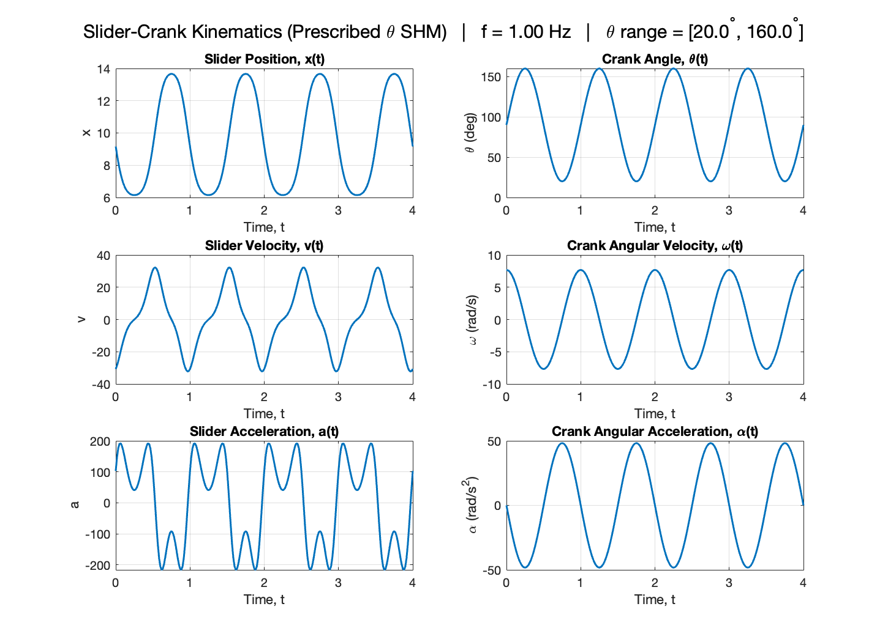
SHM Slider
$x(t) = x_{\text{mean}} + X\cos(2\pi f t)$
User-defined input signal
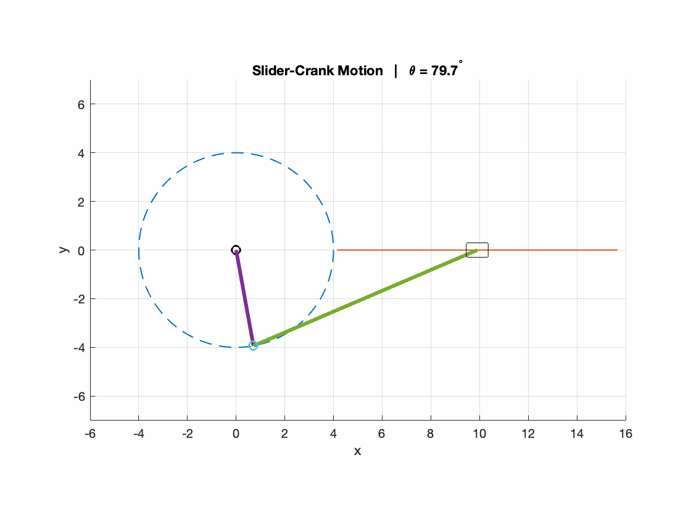
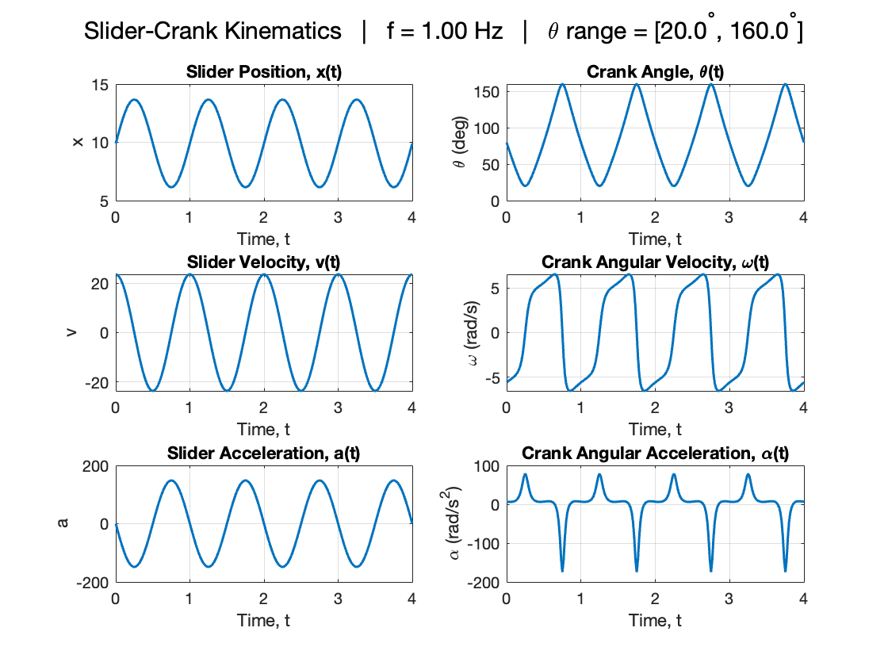
Motion Equations Derivation
The kinematic plots and visualizations above were derived from the geometric governing equation of the mechanism.
The stroke length of the slider from the crank center can be derived as follows:
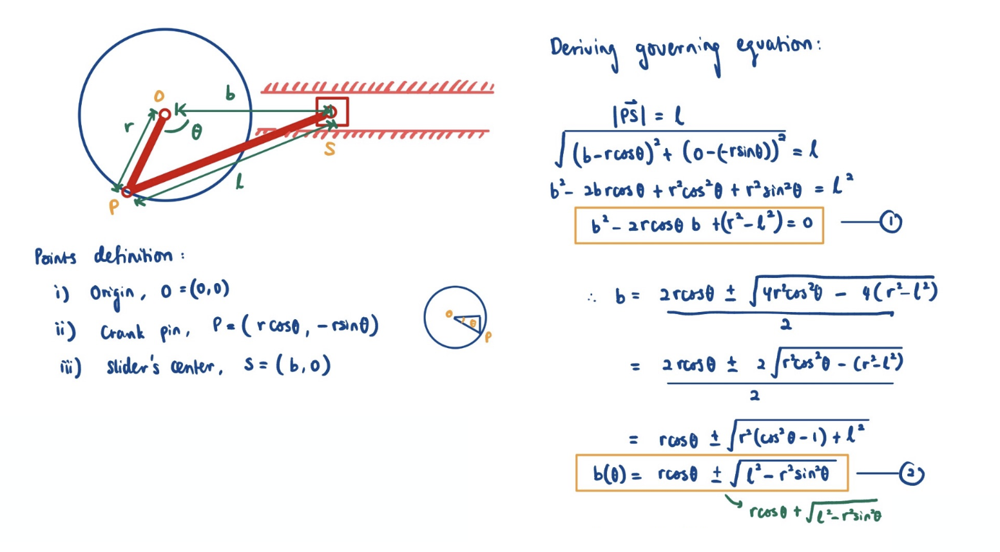
Governing equation relating crank angle to slider stroke length.
If stroke motion is defined as SHM:
Input (SHM slider stroke):
$$x(t) = x_{\text{mean}} + X\cos(2\pi f t)$$
Output (non-SHM knee angle) in terms of the slider stroke:
$$x(t) = r\cos\!\left(\theta_{\text{mean}}+\Theta\sin(2\pi f t)\right)+\sqrt{l^2-r^2\sin^2\!\left(\theta_{\text{mean}}+\Theta\sin(2\pi f t)\right)}$$
$$v(t) = \frac{dx(t)}{dt}$$
$$a(t) = \frac{dv(t)}{dt}=\frac{d^2x(t)}{dt^2}$$
Module 04
Design Optimization
Driver Mechanism
Insights from the rail mechanism prototype inspired a new approach to the actuation system. While exploring rotary-to-linear motion conversion, the scotch yoke demonstrated the benefits of a compact reciprocating drive, but its sliding contact raised concerns about friction, wear, and long-term reliability.
To retain the same motion while improving robustness,
the driver was redesigned as a crank-slider mechanism operating in reverse: a rotating crank drives a reciprocating slider.
Compared to the Scotch yoke, this configuration provides smoother operation, improved durability, and more predictable kinematics.
The resulting architecture forms a dual crank-slider mechanism with a shared slider connecting the driver and output stages. An added benefit of this geometry is that it overcomes the simple harmonic motion (SHM) trade-off discussed previously. Because the input slider no longer follows a perfect SHM profile, the output knee motion becomes noticeably smoother while maintaining a mechanically simple drive. The detailed kinematic analysis is presented in the following section.
ROM Adjustability
Ideally, the device would allow the knee ROM to be adjusted anywhere from 0° to 180°. In reality, both the mechanism and the specimen impose physical limits, reducing the practical operating range to approximately 40°–110°.
So what does it take to make the ROM truly adjustable?
It comes down to controlling two quantities:
Mean angle (φmean), which sets the center of the motion.
Total range of motion (Δφ), which determines how far the knee flexes and extends about that center.
These quantities can be controlled as follows:
Quantities to Control
How to Control?
Demonstration
φmean
Adjustable crank pivot position
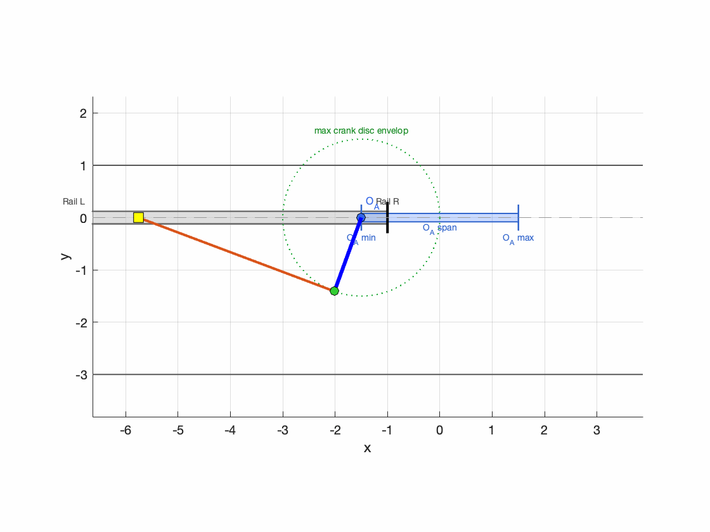
Δφ
Adjustable crank radius length
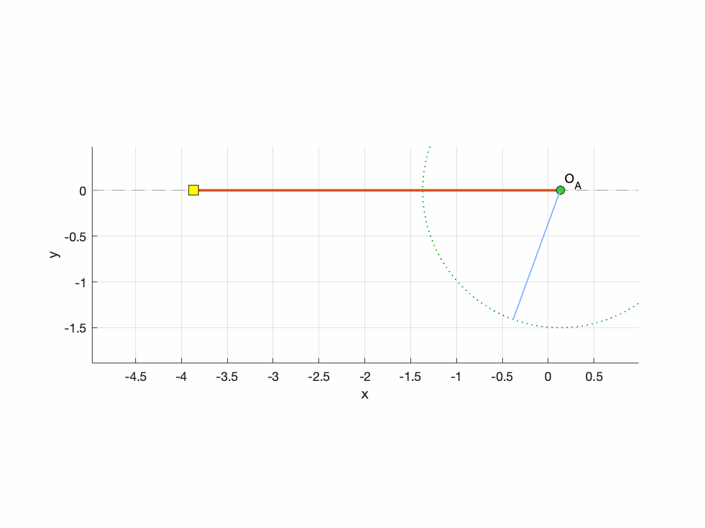
The visualization revealed two key limitations. First, allowing the crank pivot to translate across its full range to independently control the mean angle would cause it to intersect the slider rail, making the mechanism physically infeasible. Second, achieving the largest range of motion required a crank radius that exceeded the available packaging space.
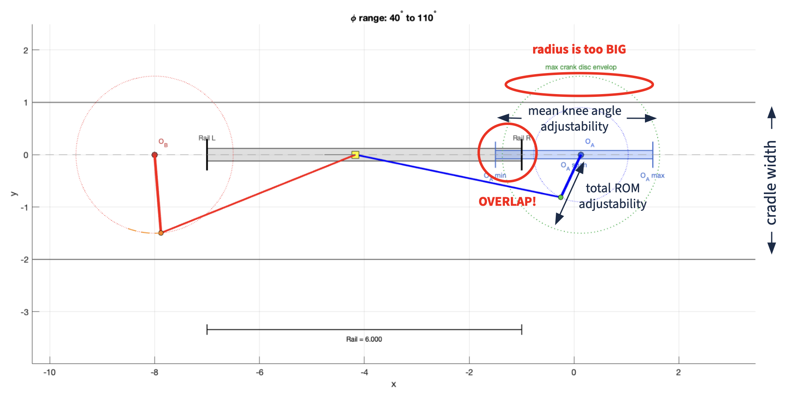
Geometric limitations identified when independently varying crank pivot position and radius.
To resolve these issues, the crank pivot was fixed in place, allowing the mean angle to vary slightly as the range of motion increased. The remaining challenge was to determine a set of mechanism dimensions that satisfied the required ROM while keeping the entire assembly compact enough to fit within the micro-CT scanner. Since key dimensions such as the rail length and coupler length directly influence both the motion and packaging, selecting them by trial and error would be inefficient.
Animation showing how the ROM (indicated by the blue sector) changes and the mean angle drifts as the crank radius (rA) changes.
After consulting with the project sponsor,
the design was simplified to five discrete ROM settings rather than a continuously adjustable range.
This reduced the mechanical complexity while still meeting the experimental requirements. The next step was to develop an optimization algorithm capable of identifying the optimal mechanism geometry and the corresponding crank radii for each ROM setting.
Optimizer Version 1
Once the design was simplified to five discrete ROM settings, the remaining challenge became determining the mechanism dimensions that could achieve all five settings while keeping the device as compact as possible.
Although the crank-slider mechanism appears simple, its dimensions are highly coupled. Changing a single parameter, such as the crank radius or coupler length, affects the slider travel, the achievable knee angle, the overall packaging, and the geometry required by the second crank. Adjusting these parameters manually quickly became impractical, as improving one aspect often worsened another.
To address this, I developed an optimization tool that systematically searched thousands of possible mechanism geometries. For each candidate geometry, the tool determined where each of the five ROM settings should be placed within the allowable angular range, calculated the corresponding slider travel, derived the required driving crank radius, and discarded any solutions that violated the physical constraints of the mechanism. Among the remaining feasible designs, it selected the most compact configuration while maintaining smooth transitions between the ROM settings.
Rather than replacing engineering judgement, the optimizer served as a design exploration tool. It allowed design decisions to be evaluated objectively, reduced weeks of manual iteration to a matter of seconds, and provided confidence that the final geometry was not simply a working solution, but one of the best solutions within the defined design space.
The detailed implementation of the optimization algorithm is discussed in the "Math & Logic" tab in the design tool website below.
The first optimizer successfully produced dimensions that satisfied the desired ROM settings on paper. The results looked compact, respected the angular limits, and appeared to generate all five target motions. However, once the dimensions were translated into CAD, the issue became clear: the math was solving valid motion cases, but not necessarily a single physical mechanism.
Some slider positions did not align across the two crank-slider stages, and a few candidate geometries only worked because the algorithm treated each ROM case too independently. In the real device, every ROM setting had to be produced by the same assembled slider, the same rail, and the same pivot spacing. This mismatch led to a second optimizer that was built around the physical geometry of the mechanism rather than isolated ROM calculations.
The key change was requiring every ROM setting to share one common slider stroke midpoint.
Instead of allowing each target motion to define its own slider location, Version 2, which was built on MATLAB, searched for one geometry that could realize all five ROM settings simultaneously. This made the optimization stricter, but also made the output much more meaningful: a solution was only accepted if it could actually be assembled as the dual crank-slider mechanism shown in the final design.
The common slider midpoint was defined from the assembled geometry as
$x_c$, where $d$ is the spacing
between the two crank pivots and $l_A$ is the A-side connecting
rod length.
$$x_c=d-l_A$$
For the output side, the optimizer searched candidate values of the B-side crank radius
$r_B$ and coupler ratio $\lambda_B$.
The corresponding output coupler length is then set by
$$\lambda_B=\frac{l_B}{r_B}$$
Each B-side candidate maps output crank angle $\phi$ to slider
position using the crank-slider relationship:
Because $x_B$ changes monotonically over the allowed output
range, the optimizer can also use interpolation to solve the inverse operation:
$$\phi=f^{-1}(x_B)$$
The midpoint search is parameterized by a reference output angle
$\phi_{\text{ref}}$, which guarantees that the common slider
midpoint lies on the feasible B-side motion path:
$$x_c=x_B(\phi_{\text{ref}})$$
For each target ROM, the A-side crank radius $r_A$ is solved
from the slider end positions around this shared midpoint:
The optimizer adjusts $r_A$ until the achieved range of motion
matches the target value. In practice, this is solved using a bisection search on the error
function:
Unlike the first optimizer, Version 2 also includes physical packaging directly in the A-side
link length. The link must leave room for the largest adjustable crank radius, pin geometry,
edge margin, slider clearance, and a small assembly allowance:
Once $l_A$ and $x_c$ are known,
the final pivot spacing is determined by the assembled mechanism:
$$d=l_A+x_c$$
The optimizer then checks that the slider endpoints match the dead-center positions of Set A.
At $\theta_A=180^\circ$, the slider should be at the left limit,
and at $\theta_A=0^\circ$, it should be at the right limit:
$$X_L=d-(l_A+r_A)$$
$$X_R=d-(l_A-r_A)$$
The feasibility checks then reject any candidate that cannot be built. The maximum required A-side crank radius must remain smaller than the B-side crank radius, the output center drift must stay within tolerance, and the packaging allowance must leave enough space for pins, material, slider clearance, and assembly. These checks were important because they forced the optimizer to respect the same constraints that would later appear in CAD and fabrication.
Among all feasible candidates, the final design is selected using an objective function. The
dominant term is the pivot spacing $d$, because minimizing this
keeps the mechanism compact. The remaining terms act as small tie-breakers that prefer lower
center drift, smaller output coupler ratio, and smaller B-side crank radius:
The revised optimizer produced a geometry whose predicted motion matched the assembled CAD model and the fabricated prototype. More importantly, it changed the optimization problem from finding five individually valid motions to finding one mechanism capable of realizing all five ROM settings. That distinction proved to be the difference between a mathematically valid solution and a buildable one.
Optimizer Comparison
Comparing the two versions makes the design shift more explicit. Version 1 was useful because it automated the search process, but Version 2 changed what the optimizer was actually solving for: not just a valid set of equations, but a buildable mechanism.
Aspect
Optimizer 1
Optimizer 2
Primary objective
Find a compact geometry that satisfies five ROM settings.
Find a compact geometry and ensure it can be assembled into a single physically consistent mechanism.
Modeling assumption
Treats each ROM case largely independently while encouraging similar center angles.
Treats all ROM cases as different operating modes of the same physical mechanism.
Slider constraint
Each ROM case determines its own optimal slider range.
Every ROM shares a common slider midpoint, enforcing one physical slider geometry.
Driving crank ($r_A$)
Estimated directly from slider stroke, $r_A=\frac{\text{stroke}}{2}$.
Computed from the actual left and right dead-center slider positions, ensuring physical consistency.
A-side kinematics
Derived after the B-side optimization.
Embedded directly into the optimization through dead-center alignment and shared slider geometry.
Clearance modeling
Basic geometric margins and linkage feasibility.
Explicit packaging model including pin diameter, edge thickness, keep-out clearance, and assembly tolerances.
Constraint philosophy
Primarily kinematic feasibility.
Simultaneously satisfies kinematic and physical assembly constraints.
Search variables
Searches over $r_B$ and $\lambda_B$, then derives the remaining dimensions.
Searches over $r_B$, $\lambda_B$, and a common slider reference location, then derives the remaining geometry.
Optimization strategy
Exhaustive grid search with sequential ROM-window optimization.
Exhaustive grid search with shared-center optimization and physical assembly validation.
Validation target
Mathematical feasibility.
Mathematical feasibility plus CAD and manufacturability consistency.
Main limitation
The optimized dimensions could satisfy the equations but still produce a mechanism that was difficult or impossible to assemble consistently.
Addresses this by embedding the physical assembly constraints into the optimization itself.
Key contribution
Automated the exploration of thousands of candidate geometries, replacing manual trial-and-error.
Reformulated the optimization so that the numerical solution corresponded directly to the mechanism that would ultimately be built.
Optimizer 2 was ultimately the stronger approach because it closed the gap between calculation and construction. By enforcing a shared slider midpoint, dead-center consistency, and explicit packaging constraints, the selected geometry was not only mathematically feasible but also consistent with the CAD model and final fabricated mechanism. For that reason, Optimizer 2 became the version used to define the final design dimensions.
Module 05
Kinematics Analysis
Motion Profile
At its core, the device is a dual crank-slider mechanism. The first crank-slider (Set A) drives a common linear slider, which in turn actuates the output crank-slider (Set B) to produce knee flexion and extension. Five interchangeable input crank lengths allow the mechanism to generate five predefined range-of-motion (ROM) settings.
Each ROM setting produces the same characteristic motion profile, with larger crank radii increasing the overall motion amplitude. The plots below illustrate the slider displacement and resulting knee angle as functions of the input crank angle for each configuration.
Because the input speed is user-adjustable, this analysis focuses on the kinematic profile rather than time-dependent motion. The profile shape remains unchanged and simply scales with the input frequency. More importantly, it allows us to evaluate the jerk behavior, which directly influences motion smoothness and mechanical reliability.
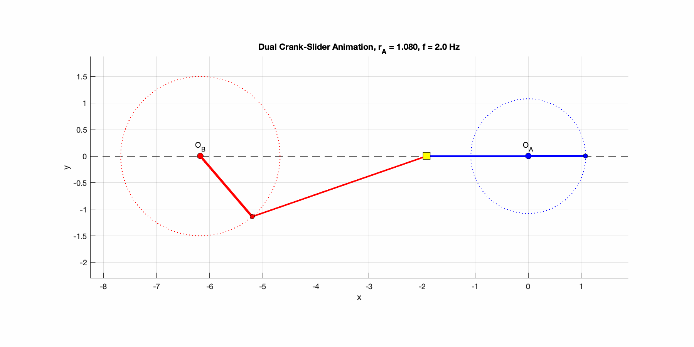
Dual crank-slider motion at maximum input crank radius (r_A max) and maximum input frequency (2 Hz).
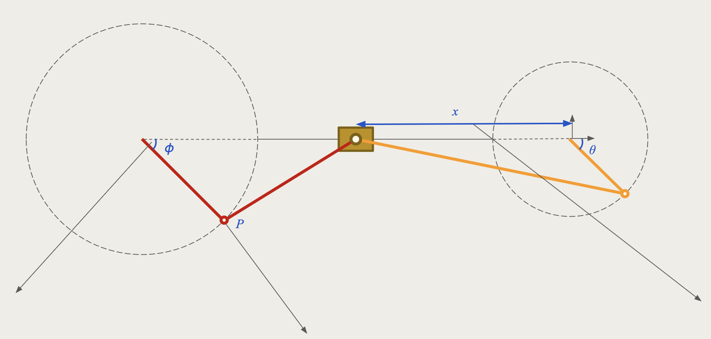
The results show that the mechanism maintains a finite jerk throughout the motion cycle, indicating smooth, continuous motion without kinematic discontinuities.
Derivations
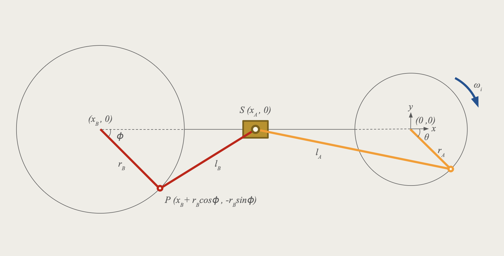
Final mechanism schematic used for kinematics analysis.
The final mechanism can be modeled as a dual crank-slider system. The schematic defines the
crank radii, link lengths, slider location, and the angular variables used to relate the motor
input to the end-effector motion.
First, the horizontal displacement of the slider, $x_A$, is derived
geometrically as a function of the input motor angle, $\theta$.
Differentiating this expression with respect to $\theta$ gives the
slider displacement rate per unit motor angle. The actual linear velocity is then obtained by
multiplying this derivative by the input motor angular velocity,
$\omega_i$.
Taking another derivative with respect to $\theta$ gives the
acceleration profile shape. Multiplying by the square of the input angular velocity produces
the slider acceleration with respect to time.
To relate the slider motion to the end-effector, the knee joint angle,
$\phi$, is solved from the geometry of the second crank-slider
loop. This angle represents the primary output because it corresponds to the knee joint flexion.
Analytical expressions for the knee angular velocity
$\left(\frac{d\phi}{d\theta}\right)$, angular acceleration
$\left(\frac{d^2\phi}{d\theta^2}\right)$, and jerk
$\left(\frac{d^3\phi}{d\theta^3}\right)$ become increasingly
cumbersome by hand. For the final motion profiles, MATLAB numerical derivatives were used and
then scaled by $\omega_i$, $\omega_i^2$,
and $\omega_i^3$, respectively.
Module 06
Fine Tuning
Thigh Mounting
Designing the thigh mount was particularly challenging because the leg geometry was both irregular and unknown. Without access to an actual rat specimen, the mounting system had to be developed using a flexible TPU mock leg whose dimensions and mechanical properties were only approximations.
The initial design relied on Velcro straps, but testing showed that the tapered, conical shape of the thigh allowed the leg to gradually slip during repeated knee actuation. A more robust mounting strategy was needed.
I proposed a clamp-based design that pressed the thigh against a rigid support while rubber bands wrapped around the opposite side, allowing the mount to conform to varying specimen geometries while maintaining a secure grip.
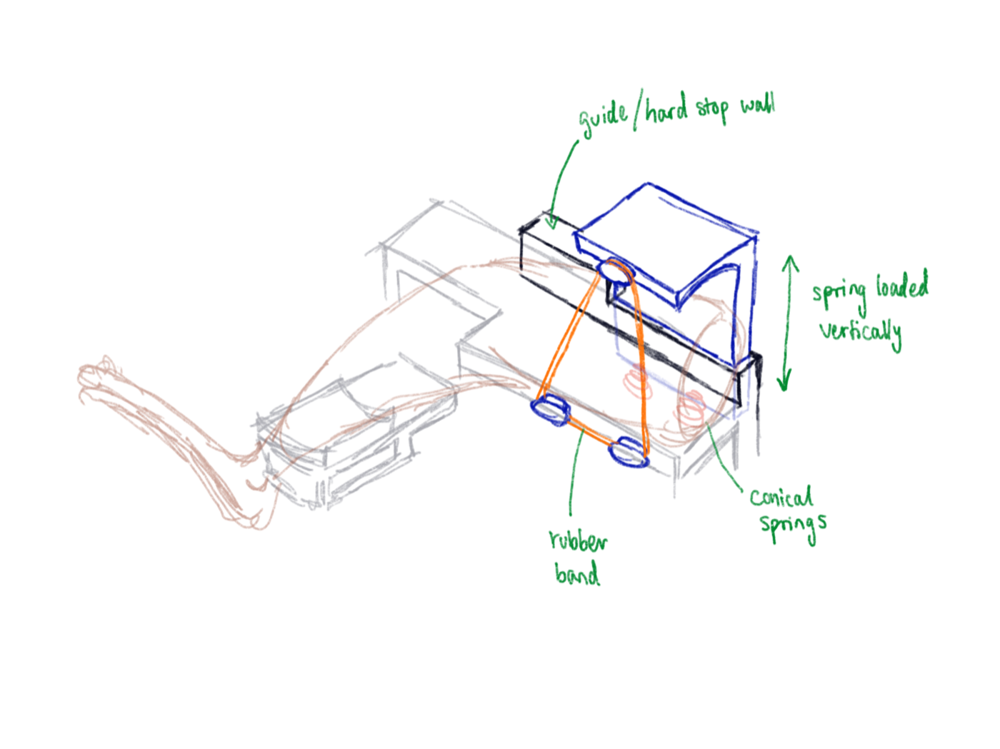
Clamp-based thigh mount concept sketch.
Through multiple design reviews and sponsor feedback, the concept evolved into the final mounting system. Rubber band slots and rear anchoring pegs improved retention, while a dedicated slot for medical tape provided an alternative mounting method for faster specimen preparation without introducing metal components near the imaging region.
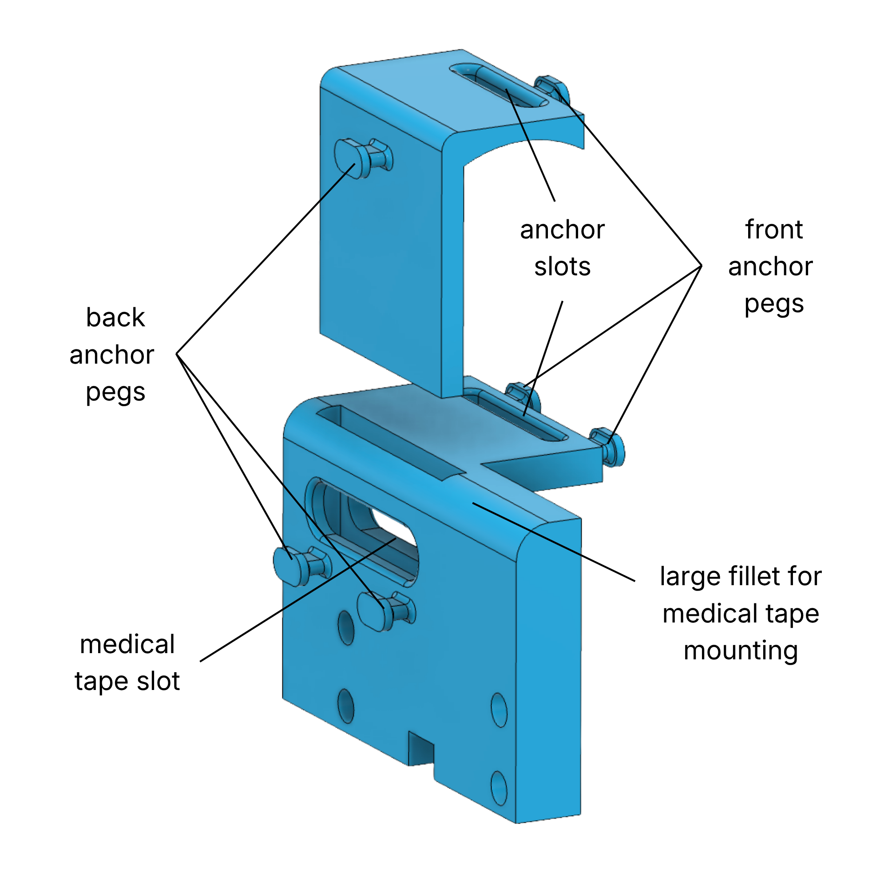
Final thigh mounting system with rubber band retention and tape-compatible mounting slot.
Slider Jamming Mitigation
After fabricating the first optimized design, testing revealed that the slider frequently jammed during operation. While the optimizer produced a compact mechanism, the resulting slider was much narrower than the height of the protruding linkage pin, making it susceptible to binding. Combined with manufacturing tolerances and 3D printing artifacts, this resulted in inconsistent sliding performance.
To identify the root cause, the rail geometry was treated as fixed while the slider was systematically refined. Five slider variants were printed with progressively larger T-slot clearances targeting an RC5 fit. Print orientation was also varied to minimize rough surfaces and unsupported overhangs inside the T-slot. Each prototype was then evaluated for sliding smoothness, looseness, and resistance to jamming.
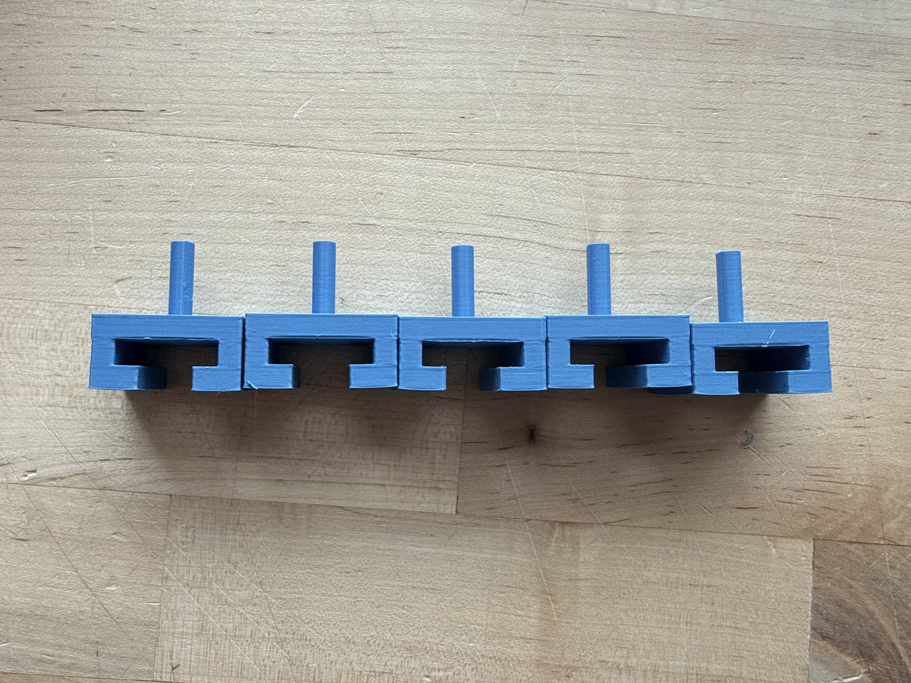
Five slider prototypes printed to evaluate T-slot clearance, print orientation, and resistance to jamming.
The final geometry was selected from the best-performing tolerance study. In addition, the slider width was increased to improve resistance against moment-induced binding. Because the linkage force is applied above the slider, it generates a tipping moment that can wedge the slider against the rail. To avoid self-locking, the slider was redesigned to satisfy:
$$w>2\mu h$$
With a generous factor of safety, $w$ represents the slider width, $\mu$ is the coefficient of friction for PLA-on-PLA contact, and $h$ is the height of the linkage pin. This wider geometry significantly reduced binding and produced smooth, repeatable motion throughout the full range of actuation.
Cradle Mount Modification
The micro-CT scanner uses a removable cradle system. Rather than designing the CPM device around the existing cradle, we developed a custom acrylic cradle that directly integrates the mechanism and powertrain while remaining compatible with the scanner's mounting interface.
Because the custom cradle extends well beyond its mounting points, it effectively behaves as a cantilever beam. Under the weight of the device, excessive deflection and vibration could compromise imaging accuracy and motion repeatability. Assuming the worst-case loading condition of a point load at the free end, the maximum deflection is proportional to:
$$\delta_{\max}\propto\frac{PL^3}{3EI}$$
This relationship shows that reducing the unsupported length has the greatest impact on stiffness, since deflection scales with the cube of the beam length. Instead of redesigning the cradle itself to be shorter, we modified the scanner's existing cradle mount by extending its support surface and relocating the mounting holes farther back. This shortened the effective cantilever length, significantly increasing the rigidity of the overall assembly.
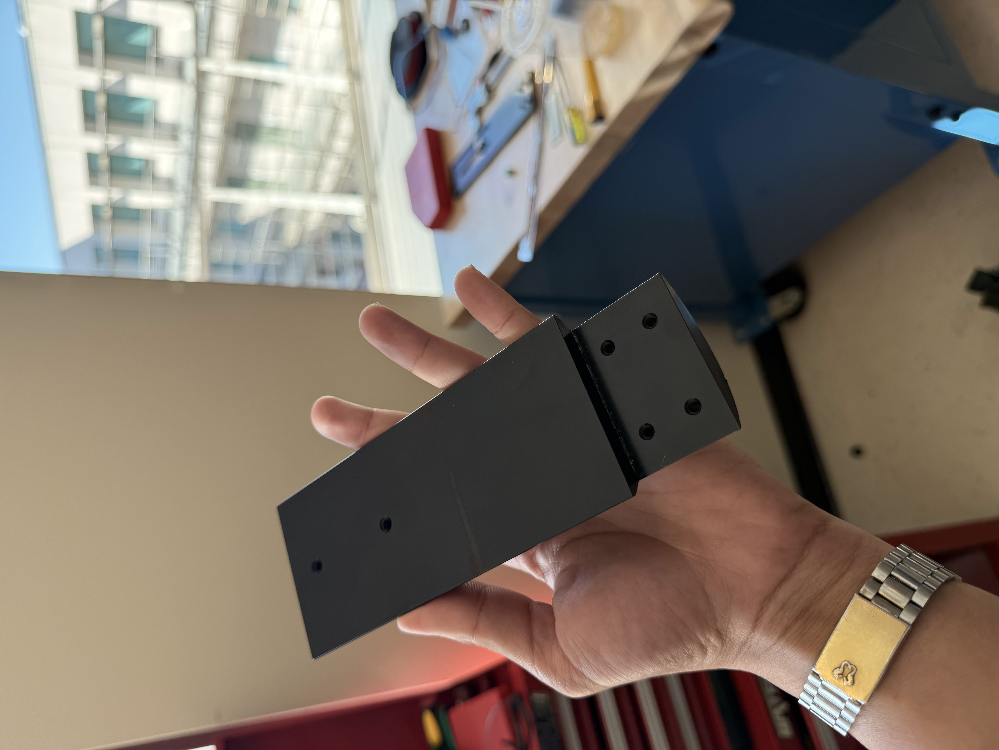
Original scanner cradle mount with a shorter support surface.
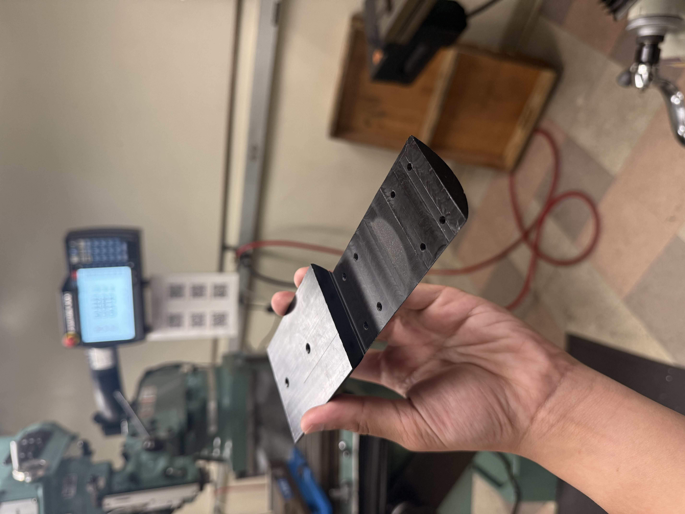
Modified cradle mount with extended support and relocated mounting holes.
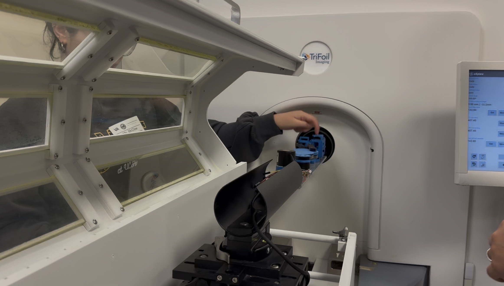
CPM mechanism installed on the modified cradle mount for improved assembly rigidity.
Module 07
Design for Assembly
Design Changes
The final assembly pass focused on turning the mechanism from a working geometry into a buildable and long-lasting product.
Before
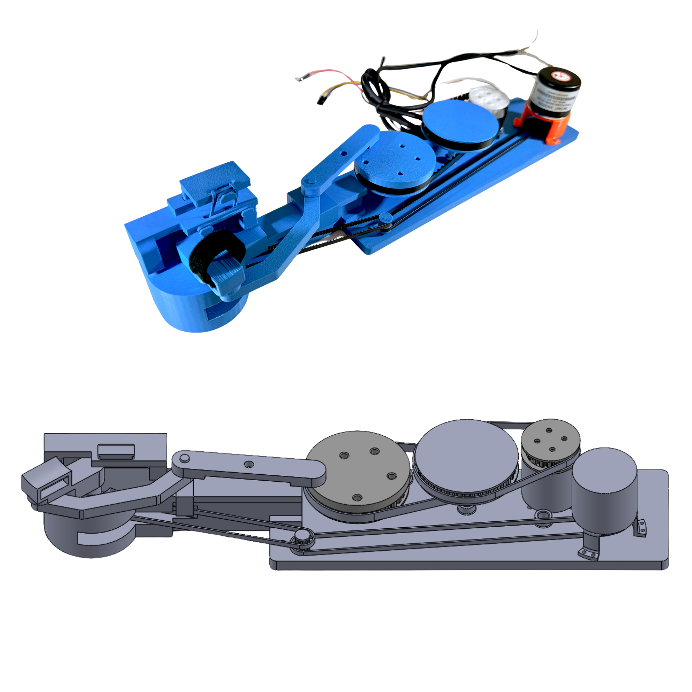
MVP Prototype
Built to validate functionality. Most components were 3D printed and designed as interchangeable modules, enabling rapid iteration, quick part replacement, and efficient testing throughout development.
After
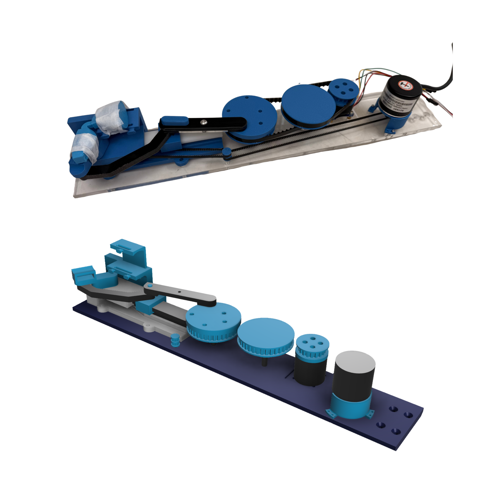
Final Design
Refined for manufacturability and long-term reliability. The design incorporated DFMA principles, improving assembly, simplifying part replacement, and reducing friction and wear while preserving the validated mechanism.
Manufacturability & Assembly
Redesigned components to ensure machinability and ease of assembly and replacement.
Fatigue Resistance
High-stress components were machined from more durable materials to improve fatigue life.
Friction Reduction
Sliding surfaces were redesigned with low-friction, replaceable wear components for smoother operation and easier maintenance.
Component-Level Changes
The DFM update was driven by targeted changes to the parts most responsible for assembly effort,
sliding friction, repeated-load durability, and alignment of the powertrain.
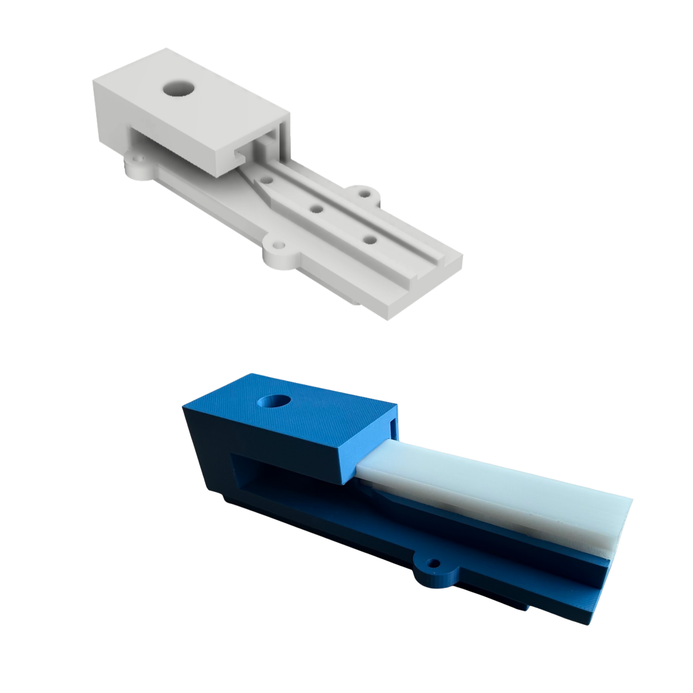
3D PrintedAssembly Focused
Simpler Body Geometry
The body was simplified so the mechanism could be assembled with fewer awkward tool paths.
Before Complex body features made assembly more sensitive to print quality and part orientation.
After Cleaner geometry improves access, repeatability, and ease of replacement.
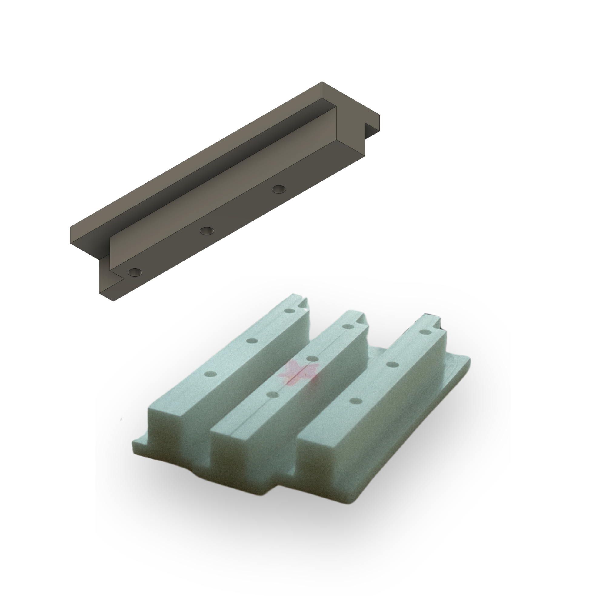
CNC MachinedLow Friction
Modular Delrin Rail
The slider interface was separated into a machined Delrin rail, giving the motion path a smoother and more controlled low-friction surface.
Before Sliding performance depended more heavily on printed surface finish.
After Delrin reduces friction and makes the wear surface easier to tune or replace.
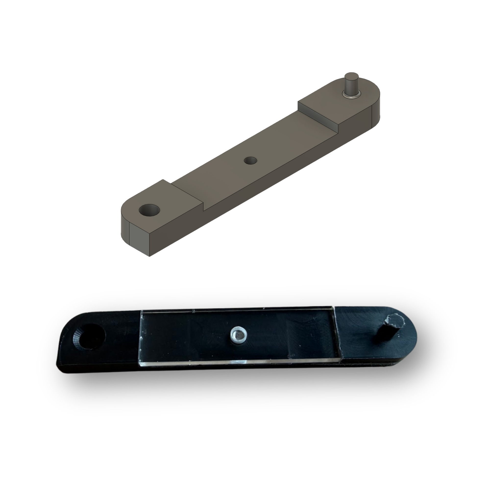
CNC MachinedFatigue Resistance
UHMWPE Input Coupler
The input coupler was changed to a CNC-milled UHMWPE part so the driven side
could better tolerate repeated loading from the crank. An acrylic slip plate was added to reduce friction between the coupler and the pulley's surface.
Before The 3D printed input coupler and pin features were prone to breaking.
After UHMWPE improves fatigue resistance while preserving the input linkage geometry.
Water Jet CutFatigue Resistance
UHMWPE Output Coupler
The output coupler was separated into its own UHMWPE component to handle the repeated force
transfer between the slider motion and the end-effector linkage.
Before Printed output coupler features concentrated stress around the pin joints which caused failure.
After The machined UHMWPE coupler provides a tougher, more serviceable output link.
Laser CutAlignment
Single Base / Cradle Plate
The body and powertrain support were consolidated into one larger laser-cut base to keep the drive system and cradle aligned.
Before Separate bases could curve upward under pulley tension.
After A single base improves flatness, stiffness, and assembly registration.
Assembly Focused
Modular Mounting Platform
The mounting platform now fastens into a slotted acrylic clamp plate with tapped holes, replacing the earlier press-fit peg attachment.
Before Press-fit pegs made attachment less adjustable and harder to service.
After The clamp plate acts as a captive tapped interface that can be screwed onto the body while avoiding metal nuts to prevent imaging artifacts.
Design Iteration
Prototype Evolution
Each deck represents one prototype version: scattered explorations collapse into a tidy set, then loosen slightly on hover to reveal the work beneath.
V1
Version 01
First Motorized Prototype
Early validation of the mechanism.
The first motorized prototype focused on one question: could the crank-slider mechanism reliably actuate the knee using a brushless DC motor? A direct-drive configuration was built by adding another set of crank-slider mechanism as a driver to validate the overall kinematics and confirm that the mechanism produced the desired reciprocating motion.
While the concept worked, testing revealed noticeable motor cogging at low speeds, resulting in jerky motion that was unsuitable for precise micro-CT imaging. This prototype demonstrated that a transmission system would be necessary to achieve smooth, repeatable actuation.
Smooth motion was achieved, but geometry optimization was still required.
The second version introduced a 4:1 belt-driven reduction system to improve low-speed performance. By reducing the motor speed and increasing output torque, the device achieved significantly smoother and more consistent motion while maintaining the desired knee trajectory.
MATLAB simulations were used alongside physical testing to evaluate the mechanism’s kinematics and packaging. Although the drivetrain successfully eliminated the direct-drive issues, the prototype revealed two new challenges: increased jerk near the ends of the stroke and a pulley layout that exceeded the micro-CT scanner’s 10 cm diameter constraint.
V3
Version 03
Minimum Viable Product
The first fully integrated system ready for experimental validation.
The final prototype combined the validated powertrain with an optimized mechanism and integrated control system. The design introduced adjustable range-of-motion settings, a compact geometry that satisfied the scanner constraints, and modular components for easier assembly and maintenance.
This version also integrated the custom MATLAB interface, allowing researchers to configure motion parameters, monitor encoder feedback in real time, and automatically stop the device after a prescribed number of cycles. With the core functionality validated, this prototype served as the foundation for the final design, which further incorporated Design for Manufacturability and Assembly (DFMA) principles.